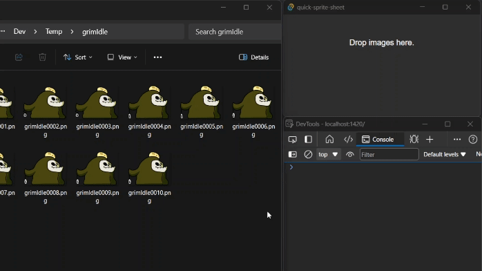
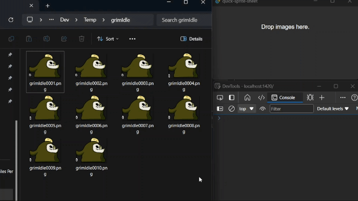

Me and my friend started working on a game recently, where he is working on the art, and I am doing the programming. Our general workflow for putting an animation into Godot looks like this: He exports an image sequence from Animate and sends it to me, I then import those images into Aseprite as an animation then I export this animation as a sprite sheet and then finally import in into Godot.
 Animation By Pictoco
Animation By Pictoco
I want to be able to automate the whole Aseprite step, I want a program I can drag an image sequence into and have it spit out a sprite sheet.
I’ve had the Tauri framework on my radar for a while now, and now I have a reason to play around with it. It lets me write the frontend of the app in html/css/js and the backend in Rust.
I can register a file drop event and print out what happens when some files are dragged in.
// main.ts
import { listen } from '@tauri-apps/api/event'
listen('tauri://file-drop', event => {
console.log(event)
})When I drag a file into the window, I can access the paths:

I’ll need a way to send these paths to my rust code, I can do that by creating a Tauri command
// main.rs
#[tauri::command(rename_all = "snake_case")]
fn sprite_dropped(payload: &str){
// do stuff
}sprite_dropped can now be called from the typescript with the invoke function. The payload argument is passed in as a JSON object.
import {invoke} from "@tauri-apps/api/tauri";
invoke('sprite_dropped', {payload: JSON.stringify(event.payload)})Back in our Rust code we can use serde_json to deserialize our JSON string into a vector of strings.
serde_json::from_str(payload).expect("Error parsing JSON");Then we can use the image crate to load all the images into a vector.
let mut imgs: Vec<DynamicImage> = Vec::new();
for file in file_names {
imgs.push(image::open(file).unwrap())
}We can create an ImageBuffer to hold the data for our output image, its height will be the same as the height of a single
frame, and its width can be calculated by multiplying the width of a single frame by the amount of frames.
let mut out_buffer = image::ImageBuffer::new(
imgs[0].width() * imgs.len() as u32,
imgs[0].height());And then clear the buffer with transparent pixels.
for (_, _, pixel) in out_buffer.enumerate_pixels_mut() {
*pixel = image::Rgba([0, 0, 0, 0]);
}Now I just want to place the input images into the buffer side by side in a single strip.
for (i, img) in imgs.into_iter().enumerate() {
image::imageops::overlay(
&mut out_buffer,
&img,
(in_img_width * i as u32) as i64,
0);
}Here’s the code I put together to clean up the file name. It is supposed to remove numbers from the end of the file name, and I am about 80 percent sure that it does exactly what I want it to do.
let out_name = {
let file_name = file_names[0].clone();
let file_name = file_name.as_str();
let file_name = file_name
.rsplit('.').collect::<Vec<_>>()[1];
let file_name = file_name
.trim_end_matches(|c: char| c.is_ascii_digit());
let file_name = format!("{}.png", file_name);
file_name
};Then I just have to save it.
out_buffer.save(out_name).unwrap();And I can now very quickly make sprite sheets.

Here’s the GitHub page.